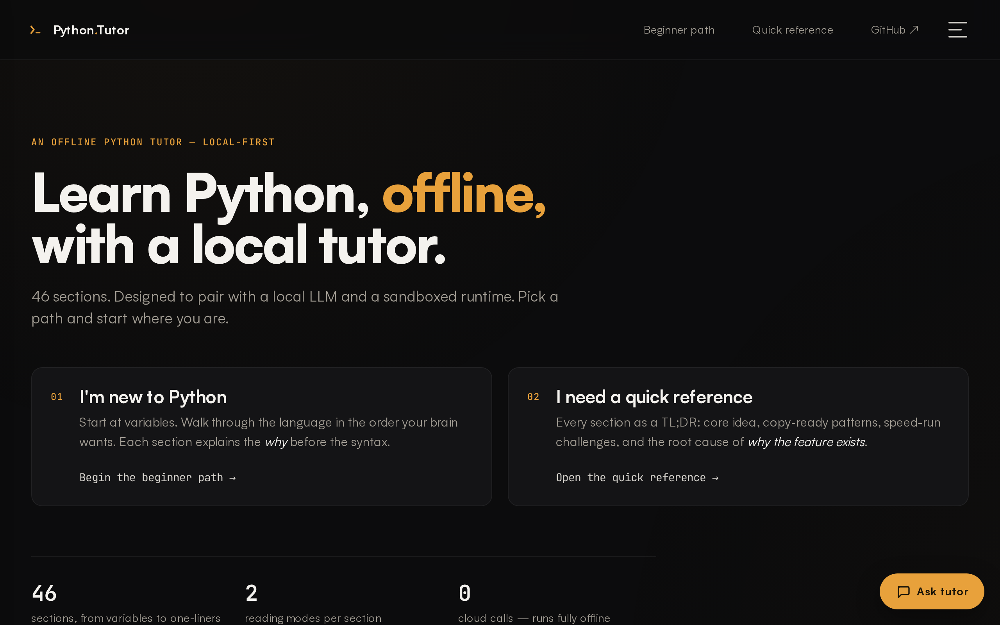
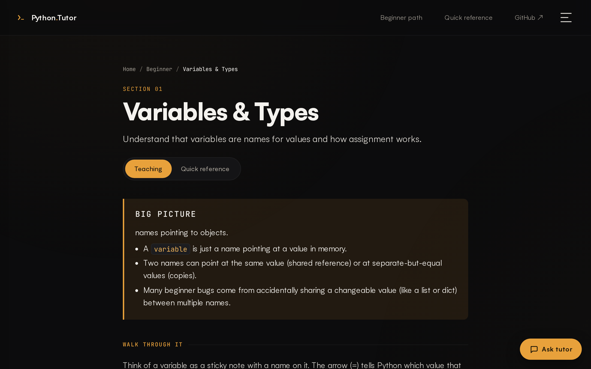
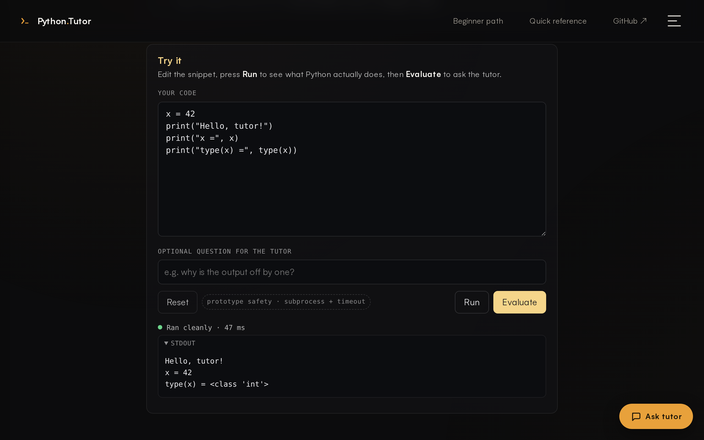
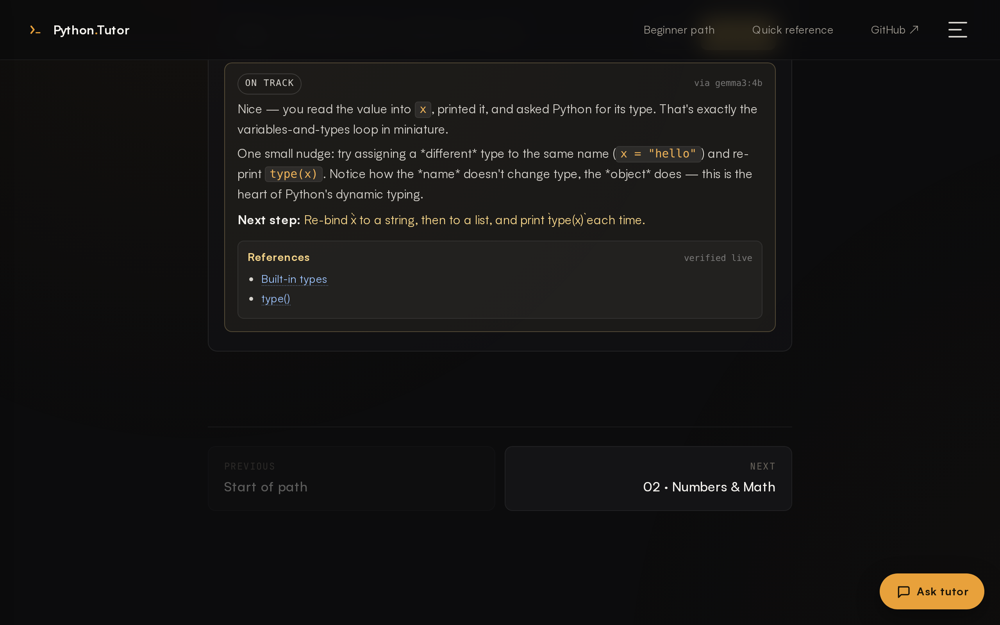
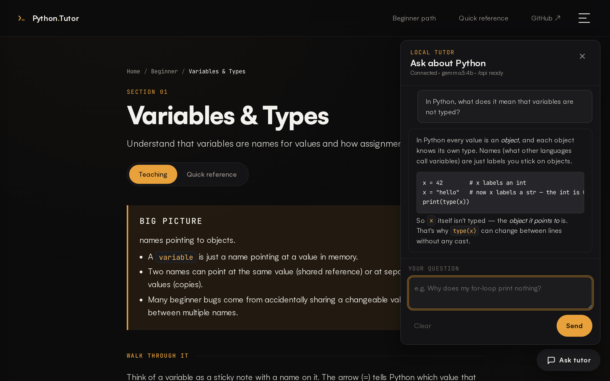
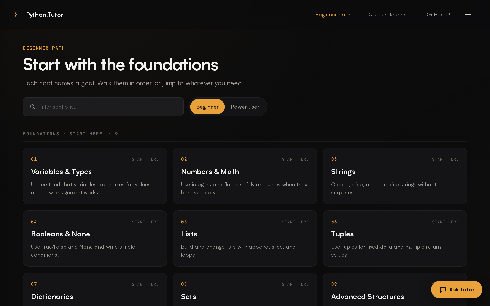

Private Python practice
with a local AI tutor.
Lessons, an interactive code lab, and a chat mentor — powered by a local LLM (Gemma via Ollama). Your code and your questions never leave your laptop.
- No accounts
- No cloud
- No telemetry
- Works on a plane
Variables & Types
Names point at values. Values know their own type — variables don't.
# try changing the value name = "Ada" age = 36 print(f"{name} is {age}")
Ada is 36
Built for learning, not for harvesting data.
-
Useful
A guided 46-section Python-foundations curriculum, an inline code lab that actually runs your code, and exercises with visible and hidden tests.
-
Private
The model runs on your machine via Ollama. No accounts, no cloud calls, no telemetry. Pull the plug — the UI keeps working.
-
Credible
The tutor cites only official Python docs from a curated allowlist. URLs are never invented by the LLM — they come from an in-repo map and are HEAD-checked when online.
The local-first loop.
Four steps. All of them happen on your laptop.
- 1 Write Python In a real editor, in the page.
- 2 Run locally Sandboxed subprocess. Real stdout, real stderr.
- 3 Get feedback Tutor sees your output, gives a verdict + a next step.
- 4 Offline practice Plane, café, air-gapped lab — same loop.
See it.
A 30-second tour of the UI, lab, and tutor.






Two commands.
macOS or Linux. Python 3.10+.
# 1 — clone
gh repo clone StewAlexander-com/python-tutor
cd python-tutor
# 2 — set up & serve (any host step is opt-in y/N)
./install.sh
./run.sh # → http://localhost:8001/
install.sh only touches the repo on its own. Installing
Ollama, starting the daemon, pulling the model, or launching the app
are opt-in y/N prompts — press Enter and nothing
changes on your host.